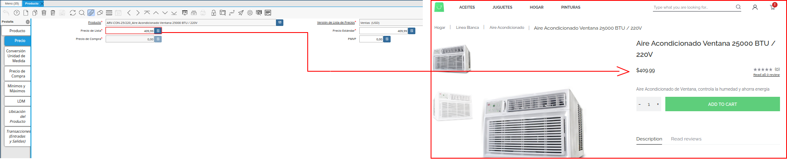

1.1. Configuración de Productos desde ADempiere¶
Una vez definida la estructura del menú del e-commerce y de como este se va a clasificar, se debe tener configurado de la siguiente manera el producto a mostrar en el e-commerce.
1.1.1. Creación o Modificación del Producto¶
Para que la información relevante del producto se pueda observar en el e-commerce, se debe chequear que el mismo se encuentre creado en ADempiere, de no ser así se debe realizar el registro del producto como lo indica el material Registro de Producto, considerando las las siguientes características.
“Campo Código”: El código del producto o unidad de mantenimiento de stock (Stock Keeping Unit “SKU”), es un valor descriptivo que identifica el producto en ADempiere. Dicho valor quedará a criterio de cada usuario para agregarlo al registro ya que este se identificará según los estándares de identificación que maneje cada negocio. Ejemplo:
Siguiendo el escenario del ejemplo planteado de la configuración de la “Megatienda”, se desea registrar el producto “Aire Acondicionado Ventana 25000 BTU/220V”, el código a asociar este caso es “ARV-CON-25/220”.
“Campo Nombre”: El nombre a colocar es el nombre del producto, este debe ser un nombre preciso que va a identificar el producto a registrar. Ejemplo:
“Aire Acondicionado Ventana 25000 BTU/220V”
“Campo Descripción”: La información a colocar en este campo es una descripción sencilla del producto que se encuentra registrando, el cual hace referencia a una pequeña información del producto que se esta registrando. Ejemplo:
“Aire Acondicionado de Ventana, controla la humedad y ahorra energía”
“Campo Ayuda”: En este campo se agregará una descripción detallada del producto a registrar, la misma explica de manera específica cada una de las características y funcionamiento que posee el producto. Ejemplo:
Aire Acondicionado 25000 BTU con pantalla digital multifuncional en español, control de humedad, enfriamiento rápido, temporizador 24 horas, sistema modo de ahorro, control remoto ultra delgado, panel acústico, kit de fácil instalación y bases para soporte.
Características:
Control de humedad
Enfriamiento rápido
Temporizador 24 horas
Sistema modo de ahorro
Panel acústico
Voltaje: 220V
Dimensiones de producto: 673x674x473 mm
Dimensiones de empaque: 794x750x520 mm
Peso Neto: 59 kg.
Peso Bruto: 66,1 kg.
Se debe tener en cuenta que, para que en el servicio del e-commerce la información a agregar en el campo ayuda se mantenga con el formato de lista y espacio en párrafos que se desee, este debe ser estructurado bajo el lenguaje de marcado “HTML”. Continuando con el ejemplo anterior para que el texto se refleje como se detalla anteriormente, se debe registrar el mismo de la siguiente manera:
<html> <body> <P> Aire Acondicionado 25000 BTU con pantalla digital multifuncional en español, control de humedad, enfriamiento rápido, temporizador 24 horas, sistema modo de ahorro, control remoto ultra delgado, panel acústico, kit de fácil instalación y bases para soporte</P> <h3>Características:</h3> <ul> <li> Control de humedad </li> <li> Enfriamiento rápido</li> <li> Temporizador 24 horas </li> <li> Sistema modo de ahorro</li> <li> Panel acústico</li> <li> Voltaje: 220V</li> <li> Dimensiones de producto: 673x674x473 mm</li> <li> Dimensiones de empaque: 794x750x520 mm</li> <li> Peso Neto: 59 kg.</li> <li> Peso Bruto: 66,1 kg</li> </ul> </body> </html>
“Campo Categoría del Producto”: Cada producto a registrar debe estar asociado a una categoría del producto, la cual es una agrupación de los productos. La selección de la misma se realiza según las características de cada producto. Ejemplo:
“Comercialización Nacional”
“Campo UM Almacenamiento”: El valor a agregar en este campo para el caso de la configuración del e-commerce puede ser el mismo que se agregó como código del producto, el mismo funciona como el SKU y es el que se usa para buscar los productos. Ejemplo:
“ARV-CON-25/220”
“Campo Categoría de Impuesto”: Si el producto maneja una categoría de impuesto para la venta este debe ser asociado en este campo. Si este es exento debe asociarse la categoría “Exento”, si es al contrario y maneja un valor de impuesto, este debe reflejarse seleccionando el respectivo el impuesto.
“Campo UM”: En este campo se asocia la unidad de medida base con la que trabajará el producto. Si el producto se compra y vende en “Caja”, la unidad de medida sería “Caja”. Si el producto se compra y vende en “Unidad”, la unidad de medida sería “Unidad”. Para el presente ejemplo, se asociará el producto a la unidad de medida “Unidad”.
“Campo Ubicación”: La asignación de la ubicación hace referencia a la ubicación donde este producto puede estar almacenado.
“Campo Vendido”: Se activa el check “Vendido” para indicar que este producto es un producto de venta.
“Campo Comprado”: Se activa el check “Comprado” para indicar que este producto es un producto de compra.
“Campo Destacado Tienda Web”: Se activa el check “Destacado en la tienda Web” para indicar que este producto pertenece a la tienda web; este check es muy importante en la configuración de este producto para el e-commerce, ya que de no ser tildado como “Destacado Tienda Web” no aparecerá para ser asociado a una “Categoría de Producto en Tienda”.
Se procede a guardar el registro de los campos con ayuda del icono “Guardar Cambios”, ubicado en la barra de herramientas de ADempiere. Si se desea verificar como se observa el registro del producto en el servicio del e-commerce se debe realizar el proceso Exportar Catálogo a Proveedor de Cache, explicado más adelante.
Imagen 1. Producto Registrado
Note
Luego de exportar el catálogo a proveedor de cache, por cada modificación que sea realizada al producto y consultar el servicio del e-commerce se puede ir observando los datos del producto registrado. Para visualizar el detalle del registro del producto se hace clic sobre el producto.
1.1.2. Agregar Imágenes al Producto¶
Para agregar las imágenes del producto al e-commerce, debe ubicar el registro de dicho producto en la ventana “Producto” desde el servicio de ADempiere y aplicar los siguientes pasos:
Seleccionar el icono “Adjuntar”, ubicado en la barra de herramientas de ADempiere. Al desplegarse la ventana “Adjunto Archivo”, debe seleccionar la opción “Carga”, ubicado en la parte superior izquierda de dicha ventana.
Imagen 2. Ventana Adjunto Archivo
Podrá visualizar la ventana “Cargando Archivo en Servidor”, con el campo “Seleccionar Archivo”, donde se debe selecciona la imagen que se requiere adjuntar.
Imagen 3. Ventana Cargando Archivo en Servidor
Al hacer clic sobre el campo “Seleccionar Archivo”, podrá visualizar la ventana que apunta a los archivos del equipo donde se encuentre trabajando. En dicha ventana se debe ubicar la ruta de la imagen, seleccionar la misma y aceptar el proceso, para que la imagen sea cargada a la ventana “Cargando Archivo en Servidor”.
Imagen 4. Seleccionar Archivo para Cargar en Servidor
El proceso se ejecuta al seleccionar la opción “Cargar Archivo(Upload)”.
Imagen 5. Opción Cargar Archivo
Finalmente, la imagen se carga a la ventana “Adjunto Archivo” y se visualiza de la siguiente forma.
Imagen 6. Imagen Cargada a ADempiere
Note
Para que las imágenes posean una buena vista desde el e-commerce se recomienda lo siguiente:
Es preferible que las imágenes trabajen con extensiones “PNG” o “JPG”.
Es recomendable que las imágenes posean un tamaño en píxeles entre los 500px Altura/Ancho, esta opción dependerá de la calidad del imagen.
Las imágenes deben tener un fondo blanco o deben estar sin fondo.
Se procede a seleccionar la opción aceptar para cargar la imagen al registro del producto. Si se desea verificar como se observa la imagen asociada en el servicio del e-commerce se debe realizar el proceso Exportar Catálogo a Proveedor de Cache, explicado más adelante.
Imagen 7. Imagen Agregada
Warning
Si desea agregar varias imágenes, se deben realizar los pasos anteriormente mencionados en el proceso Agregar Imágenes al Producto desde ADempiere.
1.1.3. Establecer Precio al Producto¶
Hasta este punto solo se tiene el registro del producto, su configuración, datos e imágenes asociadas, ahora se requiere asociar el precio a mostrar del producto. El precio se asocia en la pestaña “Precio” de la ventana “Producto”, de la siguiente manera:
Ubicar la pestaña “Precio” de la ventana “Producto” y seleccionar en el campo “Versión de Lista de Precios”, la lista de precios de venta.
Note
La asignación de la lista de precio dependera de la moneda o los precios que se deseen visualizar en el E-commerce. Algunas de las listas de ventas pueden ser:
Ventas (USD)
Ventas (VES)
Ventas (EUR)
Si se desea verificar como se observa el precio del producto en el servicio del e-commerce se debe realizar el proceso Exportar Catálogo a Proveedor de Cache, explicado más adelante.

Imagen 8. Precio del Producto
1.1.4. Exportar Catálogo a Proveedor de Cache¶
Al tener la información básica del producto y que el registro del mismo tenga activo el check “Destacado en la tienda Web”, el producto podrá ser asociado en una “Categoría Hija o Subgrupo de Productos” en la tienda web.
Siguiendo con la estructura del ejemplo de la “Megatienda” expuesto en la Configuración del e-Commerce desde ADempiere, el producto “Aire Acondicionado Ventana 25000 BTU/220V”, será asociado a la subcategoría hija “Aires Acondicionados”, misma que pertenece a la categoría hija “Línea Blanca”, de la categoría padre “Hogar”.
Luego de ser asociados los productos a las categorías, se debe aplicar el proceso “Exportar Catálogo a Proveedor de Cache”, para que este viaje a la cache del e-commerce y se pueda reflejar en el servicio de la tienda.
Warning
Cuando se tenga por completo el registro del producto y este ya se encuentre exportado con sus respectivos detalles o información. Por cada modificación adicional que se le aplique al registro del producto, se debe ejecutar nuevamente el proceso “Exportar Catálogo a Proveedor de Cache” y consultar el resultado del proceso en el servicio del e-commerce. De lo contrario, no será actualizada en el e-commerce la información agregada en el registro del producto en ADempiere.
Para aplicar el proceso debe ubicar en el menú de ADempiere, la carpeta “Definición de Tienda Web”, luego seleccione el proceso “Exportar Catálogo a Proveedor de Cache”. Una vez en la ventana del proceso, debe seleccionar la opción “ERP Store”, en el campo “Tienda Web”, para finalmente ejecutar el proceso seleccionando la opción “OK”.
Imagen 8. Ventana Exportar Catálogo a Proveedor de Cache
Al aplicar el proceso y ubicar el producto en la ruta indicada de la tienda, este se observará de la siguiente forma
Imagen 9. Registro del Producto en el e-commerce